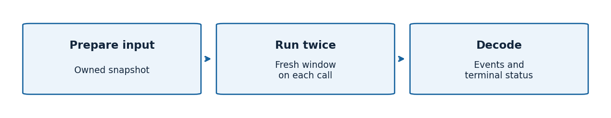

Board runtime#
Runtime use requires a compatible board/image/package combination. Read compatibility and fault recovery before operating hardware. Generating this API reference does not open a board. See parameters for connection defaults, programming behavior and input-handle ownership.
- connect(target='pynq-z2', *, bitstream=None, program=False, transport=None, native_library=None, input_slot_count=1, wait_policy='latency', session_cookie_path=None, unmeasured_inference=False)#
Connect to a preloaded release overlay or explicitly program one.
- class Board(transport, *, native_library=None)#
A loaded release image with single, batch, and bounded stream execution.
- load(compiled)#
- prepare_input(value)#
Snapshot one input for repeated execution on this loaded Board.
The returned handle belongs to this Board and is invalidated by load or close. Each run still submits a fresh window and performs normal checks. Count programs prepare only their initial input; later cuts stay fresh.
- run(value, *, window_tag=None, readout=None)#
- run_dense(value, *, window_tag=None)#
Decode one resident event frame in C for an explicit host operation.
- run_stream(values, *, readout=None)#
Yield ordered results while preparing at most one resident input ahead.
The preparation worker only advances the input iterator and runs the CPU packer. The caller thread remains the sole owner of the runner and board I/O. Virtual and count programs execute sequentially because their preparation includes runner rebinding and intermediate hardware cuts.
- run_batch(values, *, window_tags=None)#
- close()#
Connect, load and run on a board#
Board only. First follow the board walkthrough to export and
transfer model.spm and events.npy, install the matching package, and load the
matching overlay. This example uses the walkthrough’s bounded resident event
model. Load the matching overlay before connecting, or set program=True to
program it explicitly. The context manager closes the board on exit.
from pathlib import Path
import numpy as np
import spikepress
demo = Path.home() / "spikepress-demo"
inputs = np.load(demo / "events.npy", allow_pickle=False)
with spikepress.connect(bitstream="bitstreams/pynq-z2/spikemold.bit",
unmeasured_inference=True) as board:
board.load(demo / "model.spm")
result = board.run(inputs, window_tag=17)
print(result["window_tag"], len(result["spikes"]))
With window_tag=None, tags advance automatically and wrap after 65535.
See measurement scope and fault recovery.

A prepared input can be reused while its model remains loaded.#
Reuse, dense output, streaming and batches#
Board only. In a new session with the same compatible fixture, the following operations illustrate different input and output paths. A prepared handle is a snapshot owned by this board and model load: each run executes again, and reload, close or fault invalidates it. Dense decoding returns a float64 binary tensor and requires one resident, bounded v12 event package with native event support. Streaming yields ordered results and must be exhausted or closed before another board operation. Batches contain one to four windows; explicit tags must be unique within the batch. Hybrid programs do not support streaming or batching.
from pathlib import Path
import numpy as np
import spikepress
demo = Path.home() / "spikepress-demo"
inputs = np.load(demo / "events.npy", allow_pickle=False)
with spikepress.connect(bitstream="bitstreams/pynq-z2/spikemold.bit",
unmeasured_inference=True) as board:
board.load(demo / "model.spm")
handle = board.prepare_input(inputs)
first = board.run(handle, window_tag=20)
second = board.run(handle, window_tag=21)
dense = board.run_dense(inputs, window_tag=22)
print(dense["events"].shape) # B, T, C, H, W
stream = board.run_stream([inputs, inputs])
try:
for item in stream:
print(item["window_tag"])
finally:
stream.close()
batch = board.run_batch([inputs, inputs], window_tags=[30, 31])
print([item["window_tag"] for item in batch])
Use distinct windows in a real stream or batch; the repeated fixture here makes
the call shape reproducible. run_dense returns an events array and terminal
status, while ordinary run results use the mapping described below.
Result records#
Ordinary results are mappings. Optional fields depend on the path/profile;
do not interpret a missing measurement as zero. A faulted terminal is rejected
by the normal runner rather than returned as a successful inference. The
following synthetic CPU example shows the shape of InferenceResult, its
TerminalStatus, and a SpikeRecord; its numbers are illustrative, not board
measurements.
>>> from spikepress.results import InferenceResult, SpikeRecord, TerminalStatus
>>> spike = SpikeRecord(global_address=3, group=0, mask=8, timestep=1)
>>> terminal = TerminalStatus(faulted=False, execution_cycles=42)
>>> result = InferenceResult(window_tag=17, spikes=[spike], terminal=terminal)
>>> result["spikes"][0]["timestep"], result["terminal"]["faulted"]
(1, False)
>>> result.get("measurement_valid") is None
True
- class InferenceResult#
- class TerminalStatus#
- class SpikeRecord#